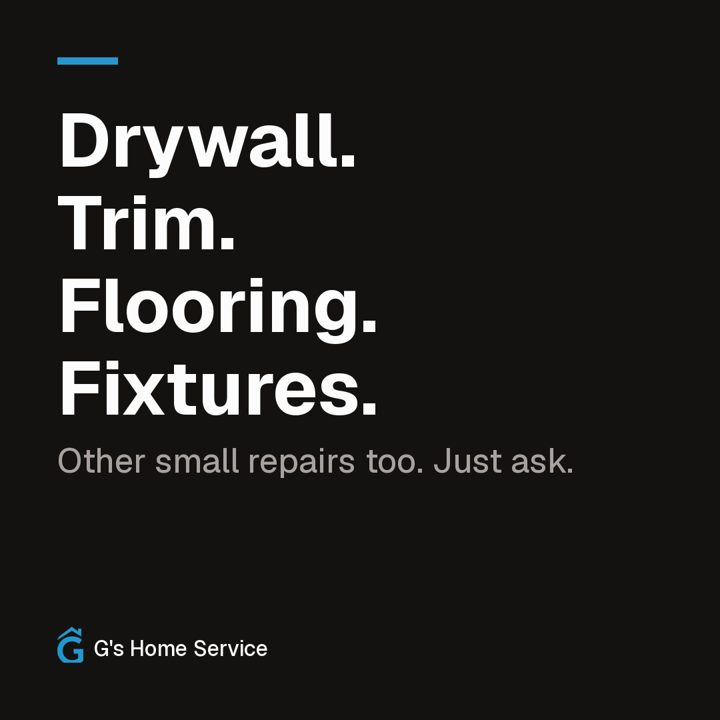
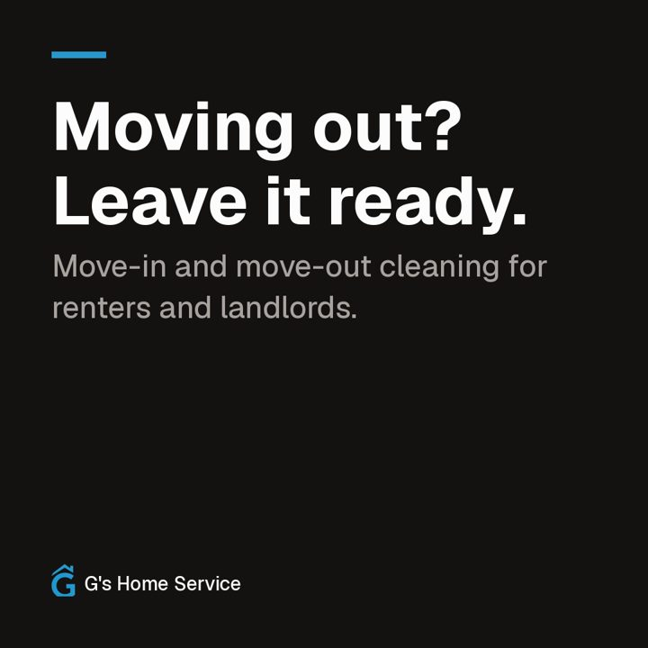
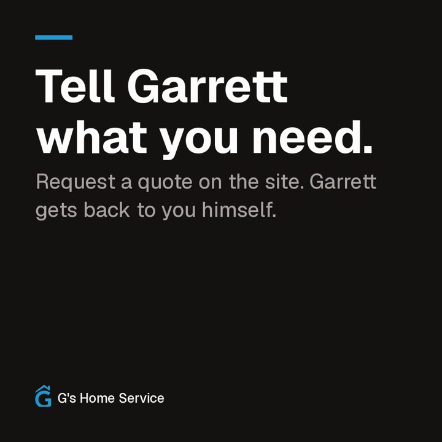

What your ads could look like.
Plain, local and to the point. Nothing here is running. Nothing gets posted or paid for until you say so.
← Back to your setup
Video ad · 18 seconds
Sample ad, not running
Vertical for Reels and Stories. A square version fits the feed. No sound.
Facebook and Instagram · feed ads (3 English, 1 Spanish)
Sample ad, not running
 Sample ad, not running
Muestra de anuncio, no está activo
Sample ad, not running
Sample ad, not running
Muestra de anuncio, no está activo
Sample ad, not running
G's Home ServiceSponsored
That list on the fridge isn't getting shorter. Drywall patches, trim, flooring, fixtures. Garrett handles the small jobs around the house across Southern Indiana and the Louisville area.

gshomeservice.comSmall jobs, handled.
Get quoteG's Home ServiceSponsored
Landlords and renters: move-out day is a lot. We clean it top to bottom and fix the small stuff, like drywall dings and loose fixtures, so the place is ready for the next person.

gshomeservice.comMove-out cleaning and touch-ups
Get quoteG's Home ServicePublicidad
¿Necesita ayuda en casa? Limpieza y reparaciones menores en el sur de Indiana y el área de Louisville. Llame al (502) 660-8352 o pida su cotización en línea. Atendemos en inglés y en español.

gshomeservice.comLlame o pida cotización
LlamarG's Home ServiceSponsored
Called a handyman and never heard back? Call (502) 660-8352. If Garrett's on a job, the front desk picks up and takes your details, and Garrett calls you back himself.
(502) 660-8352Somebody picks up.
Call now
Google search ad
Sample ad, not running
Sponsored
gshomeservice.com
Handyman in Southern Indiana & Louisville | G's Home Service
Drywall, trim, flooring, fixtures and small repairs. Home and move-out cleaning too. Call (502) 660-8352 or request a quote online.
Google Business Profile post
Sample post, not posted

Small jobs around the house?
Drywall repair, trim, flooring and fixtures, plus home and move-out cleaning. Serving Southern Indiana and the Louisville area. Tell Garrett what you need and he'll get back to you.
Photos are stock for now. Real job photos work better once Garrett has them.